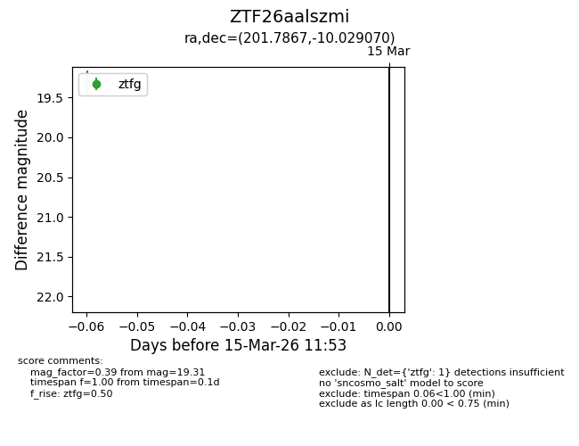
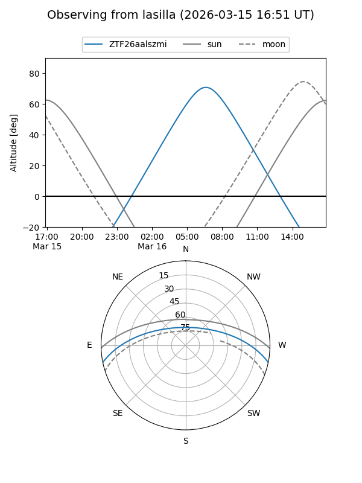
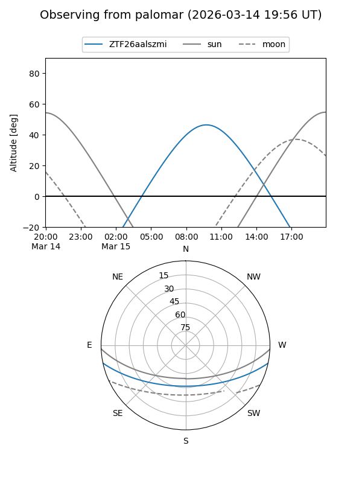

ZTF26aalszmi
Target ZTF26aalszmi at 2026-03-15 11:55
Aliases and brokers:
FINK: link
Lasair: link
ALeRCE: link
alt names
ZTF26aalszmi (ztf,fink_ztf)
Coordinates:
equatorial (ra, dec) = 201.7867,-10.02907
equatorial (HMS+DMS) = 13:27:08.80,-10:01:44.65
galactic (l, b) = (317.2531,+51.84699)
Flags:
Photometry:
last ztfg=19.31
1 ztfg detections
Lightcurve

Visibility


Additional plots